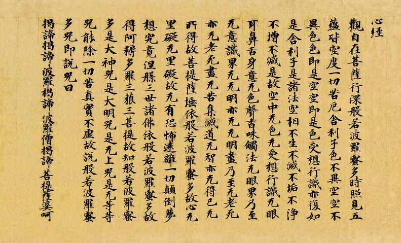

《心经》
前言
其实我不是复制过来直接就发布了，最近我写代码之余，慢慢开始抄经了~
字虽不好看，但是在坚持，今年喜欢上了钢笔，买了几只网红笔，像贵妃，78G 之类便宜好用极具性价比的。
没想到，上一篇文章发布在去年九月，那个时候刚刚开始写现在的一个用 electron 包裹的前端小程序，也不算小，但是持续到今天十一月，好像很大了。
就是这个不大不小的程序，整整一年零三个月，我没有写过文章了，手生，脑也生，我是不是要组织一下代码，哦不，我要组织一下语言。
本年度第一篇文章就在这个凄凄惨惨的下午诞生了，这一篇更像是一篇总结，前一段事件我发现，我的网站访问不了了，可能是因为一年多没有提交代码，所以 git 把我的 page 服务停了吧，同样是上个月，我收到了阿里云给我的信息，ochukai.me 要续费了，这个域名已经三年了，但是因为去年一年的懒惰，这里变得极为萧条，ochuunn 这个主题的星星数量一直在 120 附近徘徊，看了十分心痛，可我又抽不出时间来完善升级一下。
说到抽不出时间，年初我两次阿里云的电话面试没过。因为他们问我业余时间做什么，我说我没有业余时间。
我想起，四个月前，我卸载了王者农药，真的是农药，七个赛季王者也玩腻了，加上越来越大的肚腩，于是狠心，卸载。顺便开始撸铁，睡觉时间也在慢慢变长，从日均 5.7，到现在 7.5 了，肩膀不怎么疼了，胳膊也粗了，腹肌正在酝酿中，已经可以摸到了，很开心，找到了人生的一大毒瘤，并把它消灭的成就感促使我开心。
我买了好多自动铅笔，买了一个二手画板，有事没事画一幅，很丑，但是我很善良，哈哈。
简介《般若经》
《般若经》共有九部： 《放光般若》、《光明般若》、《道行般若》、《胜天般若》、《胜天王般若》、《文殊问般若》、《金刚般若》、《大品般若》、《小品般若》
玄奘版 《般若波罗蜜多心经》

观自在菩萨，行深般若波罗蜜多时。照见五蕴皆空，度一切苦厄。
舍利子，色不异空，空不异色，色即是空，空即是色，受想行识，亦复如是。舍利子，是诸法空相，不生不灭，不垢不净，不增不减。
是故空中无色，无受想行识，无眼耳鼻舌身意，无色声香味触法，无眼界，乃至无意识界。无无明，亦无无明尽，乃至无老死，亦无老死尽。无苦集灭道，无智亦无得，以无所得故。菩提萨埵，依般若波罗蜜多故，心无挂碍，无挂碍故，无有恐怖，远离颠倒梦想，究竟涅槃。三世诸佛，依般若波罗蜜多故，得阿耨多罗三藐三菩提。
故知般若波罗蜜多，是大神咒，是大明咒，是无上咒，是无等等咒，能除一切苦，真实不虚。
故说般若波罗蜜多咒，即说咒曰：揭谛揭谛，波罗揭谛，波罗僧揭谛，菩提萨婆诃。
鸠摩罗什版 《摩诃般若波罗蜜大明咒经》
观世音菩萨，行深般若波罗蜜时，照见五阴空，度一切苦厄。
舍利弗，色空，故无恼坏相；受空，故无受相；想空，故无知相；行空，故无作相；识空，故无觉相。何以故？
舍利弗，非色异空，非空异色，色即是空，空即是色，受、想、行、识，亦如是。
舍利弗，是诸法空相，不生不灭，不垢不净，不增不减。是空法，非过去、非未来、非现在。
是故空中无色，无受、想、行、识，无眼、耳、鼻、舌、身、意，无色、声、香、味、触、法，无眼界，乃至无意识界；无无明，亦无无明尽；乃至无老死，亦无老死尽；无苦集灭道，无智亦无得，以无所得故。
菩萨依般若波罗蜜故，心无挂碍。无挂碍故，无有恐怖，离颠倒梦想苦恼，究竟涅盘。三世诸佛，依般若波罗蜜故。得阿耨多罗三藐三菩提。故知般若波罗蜜是大明咒、无上明咒、无等等明咒，能除一切苦，真实不虚。
故说般若波罗蜜咒。即说咒曰：“竭帝竭帝 波罗竭帝波 罗僧竭帝 菩提僧莎呵。”
回向偈
愿以此功德。庄严佛净土。
上报四重恩。下济三途苦。
若有见闻者。悉发菩提心。
尽此一报身。同生极乐国。